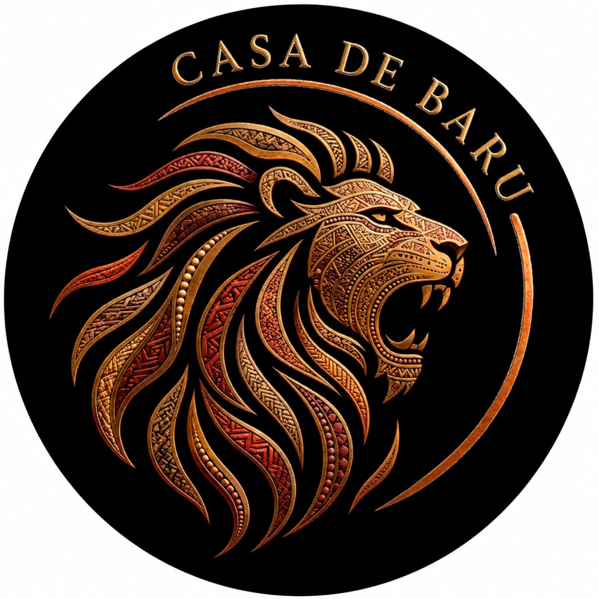
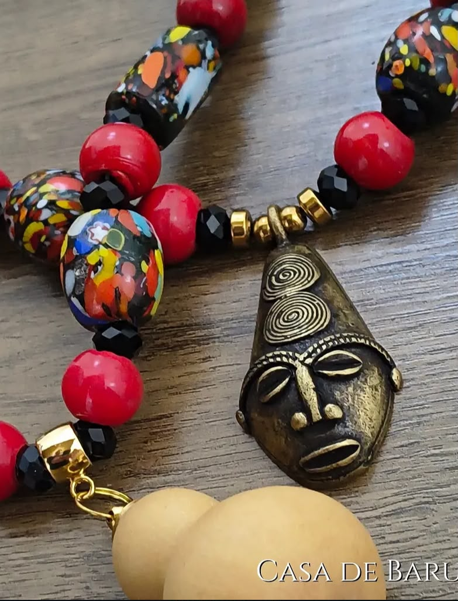
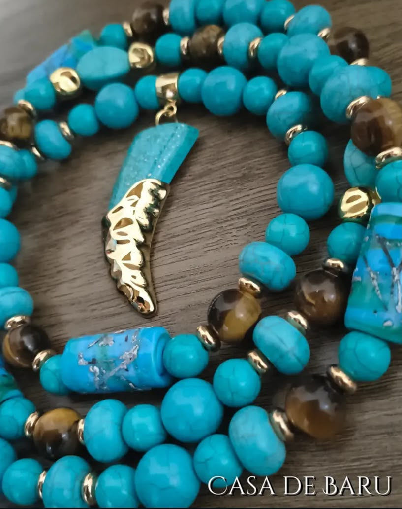
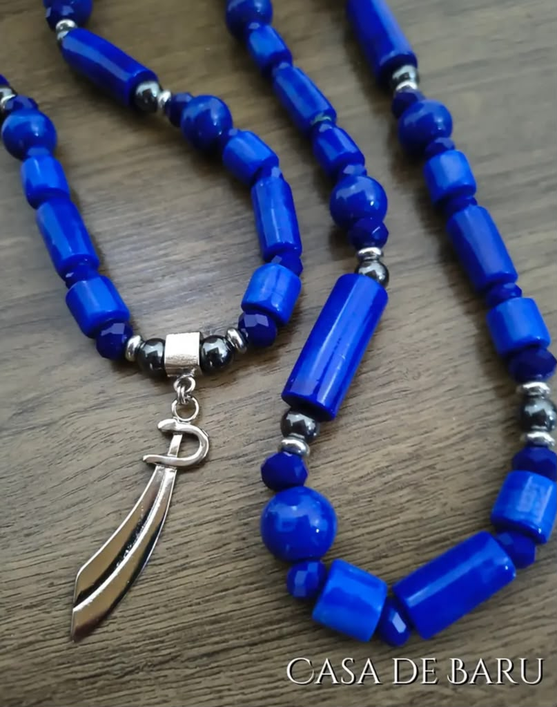
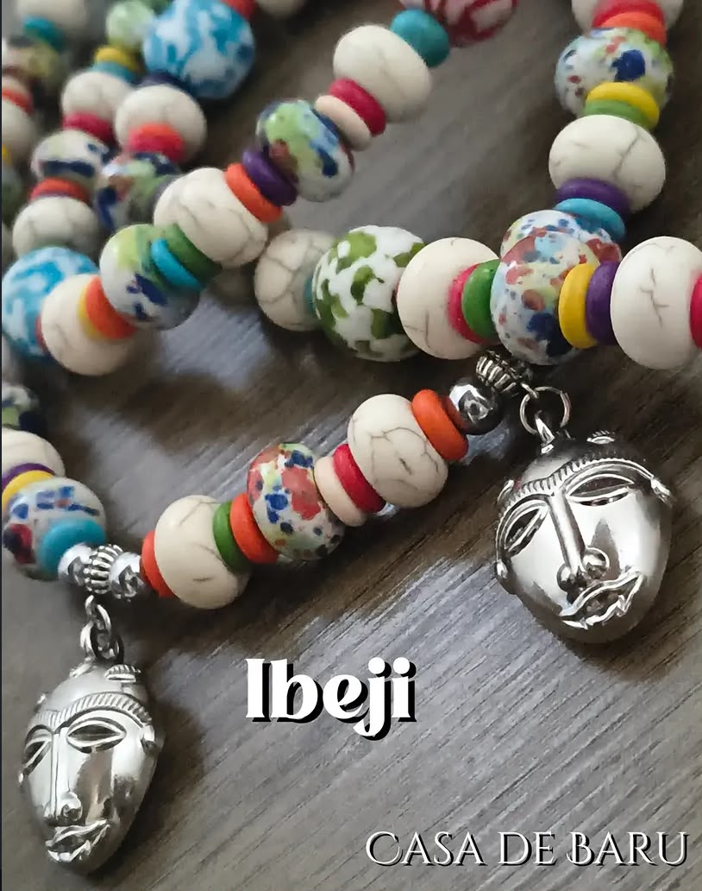
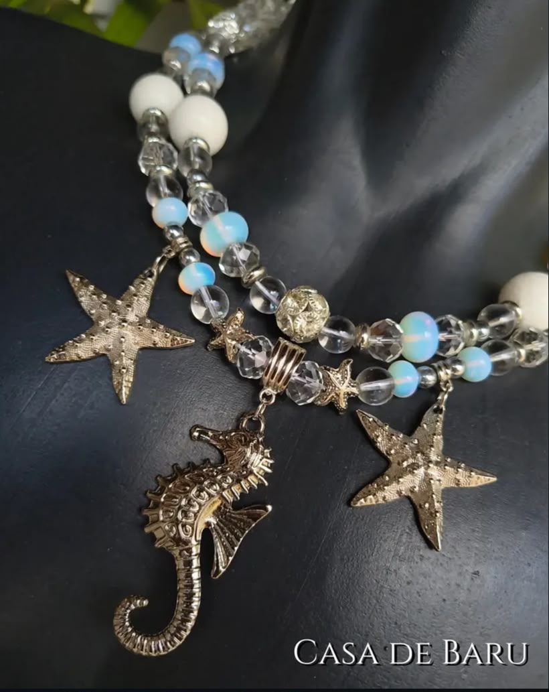
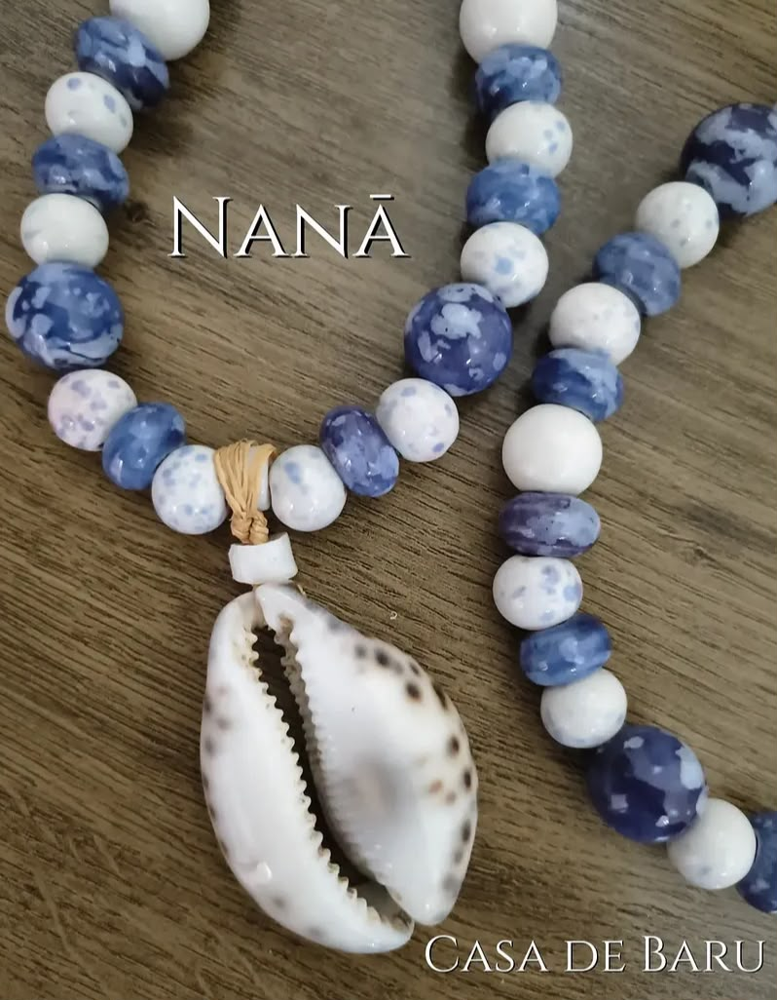

ILEKÉ · REFERÊNCIA VISUAL
Consulte esta peça
Valor sob consulta
Confirme disponibilidade

CASA DE BARU
CASA DE BARU — CULTURA E IDENTIDADE
Joias, ilekés e fios de contas ligados à cultura afro-brasileira. Imagens, cores e expressões da Casa de Baru.
Explorar coleção ↗01 — GALERIA CASA DE BARU

01 / COLEÇÃOIlekésExplorar coleção ↗
02 / COLEÇÃOFios de ContasExplorar coleção ↗ 03 / COLEÇÃOOxóssiExplorar coleção ↗
04 / COLEÇÃOIbejiExplorar coleção ↗ 05 / COLEÇÃOOgumExplorar coleção ↗
06 / COLEÇÃOYemanjáExplorar coleção ↗ 07 / COLEÇÃOExuExplorar coleção ↗
08 / COLEÇÃONanãExplorar coleção ↗A seleção de imagens é uma referência visual. Confirme com a Casa a associação e disponibilidade de cada peça.
02 — SELEÇÃO VISUAL
Imagens reais compartilhadas pela marca.
Valores e disponibilidade sob
confirmação.
03 — SOBRE A CASA DE BARU
A Casa de Baru apresenta joias dos Orixás, ilekés e fios de contas ligados à cultura afro-brasileira.
Conheça as imagens compartilhadas pela marca e converse com a equipe para confirmar informações sobre cada peça.
Conheça a Casa ↗FORMAS DE PAGAMENTOConsulte a equipe da Casa
OPÇÕES DE ENVIOConsulte modalidades e prazos
ATENDIMENTOFale diretamente com a Casa
CULTURA E IDENTIDADECasa de Baru
04 — ATENDIMENTO
Consulte valores, disponibilidade e detalhes diretamente com a equipe da Casa de Baru.
Falar com a Casa ↗O contato direto será habilitado após configurar o WhatsApp oficial.Imagem de referência fornecida pela marca. Consulte cadastro, materiais, medidas, valor e disponibilidade com a Casa de Baru.